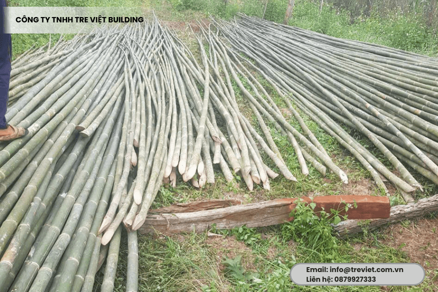

Tầm vông là một trong những loài tre quý, được ưa chuộng nhờ sự bền bỉ, tính dẻo dai cùng khả năng chống chịu tốt trước thời tiết khắc nghiệt. Vì thế mà hiện nay, vật liệu này đang được ứng dụng rộng rãi, phổ biến trong thiết kế nội – ngoại thất, góp phần mang lại giá trị kinh tế bền vững cho các chủ đầu tư, các đơn vị thi công lẫn cơ sở sản xuất thủ công mỹ nghệ.
Tuy nhiên, để có được một công trình vừa thẩm mỹ, vừa chất lượng, việc sở hữu nguồn nguyên liệu đạt tiêu chuẩn là điều kiện quan trọng, tất yếu. Vậy, trong bài viết hôm nay, hãy cùng Tre Việt Building tìm hiểu chi tiết về kỹ thuật trồng, chăm sóc cây tầm vông sao cho hiệu quả nhất bạn nhé.
Kinh nghiệm chọn giống tre tầm vông chất lượng
Chọn giống là bước quan trọng đầu tiên quyết định sự thành công của cả vụ trồng. Mọi người có thể lựa chọn giống theo 2 phương pháp, đó là:
- Nhân giống bằng hom gốc: Phương pháp này phù hợp với quy trồng và chăm sóc cây tầm vông nhỏ. Nên chọn hom già, không sâu bệnh, nhiều rễ, chặt cách gốc từ 70 – 80cm. Ươm cây trong đất tơi xốp, trộn với phân chuồng ủ hoai mục và rơm rạ.
- Nhân giống bằng chiết cành: Phương pháp này phù hợp với quy mô trồng lớn. Bà con có thể tăng số lượng cây giống mà vẫn đảm bảo không làm ảnh hưởng đến cây mẹ. Cành chiết có từ 3 – 4 lóng, bó bầu bằng hỗn hợp mùn rơm/xơ dừa. Sau khoảng 20 – 30 ngày, tiến hành kiểm tra rễ, nếu đạt thì mang đi ươm.
Chú ý: Cả hai kỹ thuật hom gốc và chiết cành tầm vông đều cần phải được xử lý kỹ trước khi đem đi trồng. Tránh tình trạng nấm bệnh gây hại và đồng thời tăng tỉ lệ sống cho cây.
Hướng dẫn kỹ thuật trồng cây tầm vông đơn giản, hiệu quả

Để đảm bảo chất lượng vật liệu đầu vào cho thi công và sản xuất, Tre Việt Building đã áp dụng quy trình trồng tầm vông khoa học, hiệu quả tại vườn tre riêng ở Lâm Đồng. Và sau đây là các bước kỹ thuật trồng đơn giản nhưng hiệu quả mà bạn có thể tham khảo, áp dụng:
- Thời điểm trồng: Cây tầm vông rất dễ sống. Bà con có thể tiến hành nhân giống vào khoảng tháng 2, tháng 3 âm lịch và trồng vào đầu mùa mưa mỗi năm. Như vậy sẽ giúp tỷ lệ sống của cây đạt lên đến 90%.
- Mật độ trồng: Mật độ trồng ở khu vực vùng núi khoảng từ 500 cây trên mỗi ha. Mọi người có thể trồng cách hàng 4m, hàng 5m, hoặc 3*6 (m), linh hoạt tùy vào địa hình.
- Chuẩn bị trồng: Trước khi trồng, chú ý đào hố với kích thước vừa phải. Tiến hành lót đáy bằng 5 – 10kg phân chuồng ủ hoai mục, trộn với đất mặt để giúp gia tăng dinh dưỡng nuôi cây xanh tốt, phát triển.
- Trồng cây tầm vông: Thực hiện gỡ lớp bọc hom giống, nhẹ nhàng đặt cây vào hố, nén đất chặt quanh gốc để giúp giữ cho cây được đứng vững.
- Giữ ẩm cho cây: Sau khi trồng, thường xuyên tưới nước để cung cấp đủ độ ẩm. Phủ thêm một lớp rơm khô hay lá tre xung quanh gốc để giúp bảo vệ rễ và thúc đẩy cây trồng phát triển nhanh.
Hướng dẫn cách chăm sóc cây tầm vông chuẩn khoa học
Tưới nước và bón phân

Khi mới trồng, bộ rễ của tầm vông rất yếu, dễ bị đổ, ngã và chết do thiếu nước. Vậy nên, nhà vườn cần đảm bảo cung cấp nước đầy đủ, bón phân theo định kỳ để cây phát triển khỏe mạnh. Về cơ bản, cây cần được tưới nước 2 lần/tuần.
Từ năm thứ 4 trở đi, cây tầm vông bắt đầu cho măng. Giai đoạn này, hãy bón phân NPK theo mùa. Đầu mùa mưa tập trung bón nhiều phân N, cuối mùa mưa tăng phân K để giúp cây tăng cường sức đề kháng, chống chọi tốt với bệnh tật và thời tiết khắc nghiệt.
Cắt tỉa và phòng trừ sâu bệnh
Công tác cắt tỉa và phòng trừ sâu bệnh trong quá trình trồng, chăm sóc cây tầm vông là vô cùng quan trọng, thiết yếu. Nhà vườn phải thường xuyên kiểm tra, kịp thời loại bỏ cây yếu, cây bị nhiễm bệnh, cây mọc chen chúc. Tiến hành làm sạch gốc, phát quang bụi rậm để hạn chế tối đa tình trạng sâu đục thân, bệnh xoắn lùn. Khuyến khích sử dụng thuốc vào vệ thực vật đúng liều lượng, đúng thời điểm, không lạm dụng.
Mua tre tầm vông chất lượng, giá tốt tại Tre Việt Building

Trên thực tế, không phải bất kỳ cá nhân hay đơn vị nào cũng có đủ thời gian, điều kiện, quỹ đất để tự xây dựng một vườn tre riêng đạt chuẩn. Trong khi đó, nhu cầu sử dụng tầm vông đang ngày càng gia tăng, nhất là trong những công trình kiến trúc đề cao yếu tố thẩm mỹ, gần gũi với thiên nhiên như quán cà phê, nhà hàng, homestay, resort, F&B,… Và đây chính là lúc bạn cần một đối tác cung cấp nguồn tre uy tín, chất lượng, giá cả hợp lý, dịch vụ đáng tin cậy. Chắc chắn, Tre Việt Building là sự lựa chọn lý tưởng.
Với hơn 15 năm kinh nghiệm trong lĩnh vực thi công, thiết kế tre trúc, chúng tôi cam kết mang đến cho bạn sản phẩm tre tầm vông đạt tiêu chuẩn về kỹ thuật, độ bền và tính thẩm mỹ.
Dưới đây là những lý do bạn nên chọn Tre Việt Building:

- Nguồn tre chất lượng: Tre được tuyển chọn kỹ lưỡng từ vườn riêng tại Lâm Đồng, đảm bảo độ đồng đều và tươi mới. Đặc biệt, tre được trải qua quy trình xử lý chuyên nghiệp, đủ thời gian, đạt tiêu chuẩn, giúp tăng cường khả năng chống mối mọt và cho độ bền vượt trội.
- Giá cả cạnh tranh: Chúng tôi cam kết cung cấp vật liệu tre tầm vông trực tiếp, không qua trung gian, đảm bảo mức giá thành cạnh tranh nhất thị trường. Đặc biệt còn có chiết khấu hấp dẫn cho các đơn hàng lớn.
- Tư vấn chọn tre phù hợp: Chúng tôi sở hữu một đội ngũ nhân công lành nghề, giàu kinh nghiệm và am hiểu về vật liệu. Vì thế, họ sẽ nhiệt tình hỗ trợ, tư vấn quỹ khách hàng trong việc lựa chọn tre sao cho phù hợp với mục đích sử dụng, để giúp công trình vừa đẹp, vừa hiệu quả.
- Dịch vụ trọn gói: Chúng tôi chuyên cung cấp và đảm nhận toàn bộ quy trình mà quý khách hàng cần. Từ khảo sát, tư vấn chọn nguyên liệu, lên ý tưởng thiết kế, cung ứng tre, thi công lắp đặt, bảo trì hậu mãi. Và bạn chỉ cần đưa ra ý tưởng, cho chúng tôi biết bạn muốn gì. Tất cả những việc còn lại đã có Tre Việt Building bao trọn gói, giúp tiết kiệm cả thời gian lẫn công sức quản lý của bạn.
- Giao hàng toàn quốc: Tre tầm vông sẽ được đơn vị đóng gói kỹ, vận chuyển an toàn, nhanh chóng đến mọi tỉnh thành trên toàn quốc.
Còn chần chờ gì nữa, hãy liên hệ ngay hôm nay để được Tre Việt Building hỗ trợ, tư vấn chi tiết nhé.
Thông tin liên hệ:
CÔNG TY TRÁCH NHIỆM HỮU HẠN TRE VIỆT
BUILDING
Địa chỉ: 917 Phạm Văn Đồng, Phường Linh Xuân, Thành phố
Hồ Chí Minh
Nhà máy sản xuất: Phú Hợp B, Xã Phú Lâm, Đồng Nai.
Website: tretruc.com.vn
Điện thoại – Zalo: 093.123.5757
Email: info@treviet.com.vn – treviet23@gmail.com